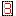
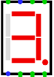
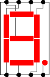

7-Segmentanzeige
| Bibliothek: |
Input/Output |
| Eingeführt: |
2.1.3 |
| Aussehen: |
 |
Verhalten
Displays the values of its inputs. Segments
are either
colored or light gray depending on the inputs. The correspondence is as
follows.

(Manufacturers vary as to how they map inputs to segments; the
correspondence used here is based on Texas Instruments'
TIL321.)
Pins
- North edge, first from left (input, bit width 1)
- Controls the middle horizontal segment.
- North edge, second from left (input, bit width 1)
- Controls the upper vertical segment on the left side.
- North edge, third from left (input, bit width 1)
- Controls the upper horizontal segment.
- North edge, fourth from left (input, bit width 1)
- Controls the upper vertical segment on the right side.
- South edge, first from left (input, bit width 1)
- Controls the lower vertical segment on the left side.
- South edge, second from left (input, bit width 1)
- Controls the bottom horizontal segment.
- South edge, third from left (input, bit width 1)
- Controls the lower vertical segment on the right side.
- South edge, fourth from left (input, bit width 1)
- Controls the decimal point.
Diese Pins gelten, wenn Eingang auf Einzelne Pins
steht.
Ist Eingang auf Bus
gesetzt, ersetzt ein einzelner Eingang die
einzelnen Pins. Die Breite ist 7 ohne Dezimalpunkt und 8 mit Dezimalpunkt.
Bit 0 ist Segment A, danach B, C, D, E, F und G. Bit 7 ist der Dezimalpunkt,
wenn er eingeschaltet ist. Bus-Seite legt den Pin oben, unten, links
oder rechts an; die Voreinstellung ist links. Die Ziffer selbst dreht sich
nicht. So können mehrere Anzeigen direkt nebeneinander eine mehrstellige Zahl
zeigen.
Attribute
- On Color
- The color with which to draw the display segments and decimal point when
they are on.
- Off Color
- The color with which to draw the display segments and decimal point when
they are off.
- Background
- The color with which to draw the display's background (transparent by default).
- Active On High?
- If
yes
, then the segments light when the corresponding input is 1.
If no
, they light when the corresponding input is 0.
- Eingang
Einzelne Pins
(Voreinstellung) oder Bus
. Bestehende Schaltungen
bleiben bei einzelnen Pins.- Bus-Seite
- Seite des Bus-Pins: oben, unten, links oder rechts. Voreinstellung ist links.
Der Rahmen bleibt gleich groß. Der Pin liegt auf einem 10-Pixel-Rasterpunkt.
Oben und unten ist das der Rasterpunkt neben der Mitte. Links und rechts wird
der Pin knapp außerhalb des Rahmens gezeichnet, auf dem nächsten Rasterpunkt.
Wirkt nur, wenn Eingang auf
Bus
steht.
Verhalten des Schaltwerkzeugs
Keines.
Verhalten des Textwerkzeugs
Keines.
Zurück zur Bibliotheksreferenz